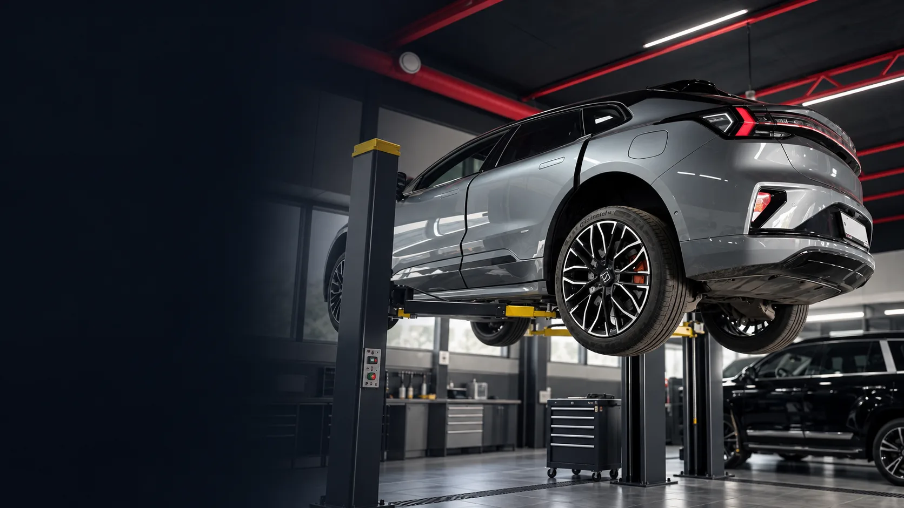
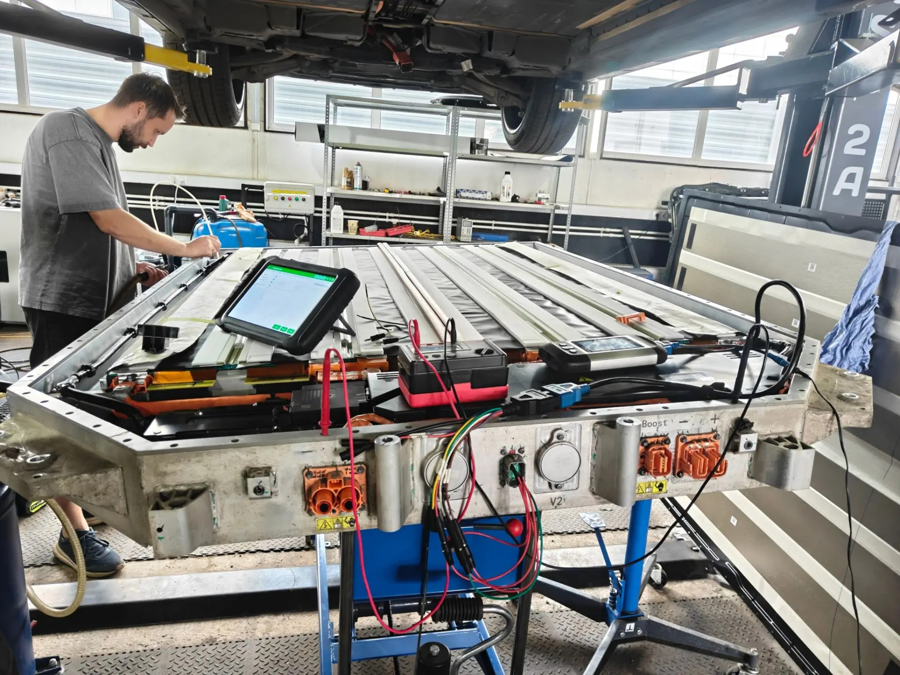
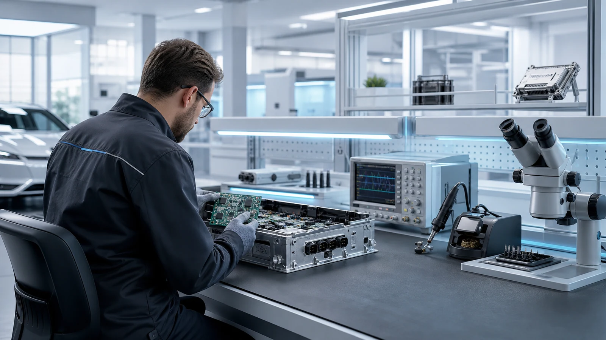
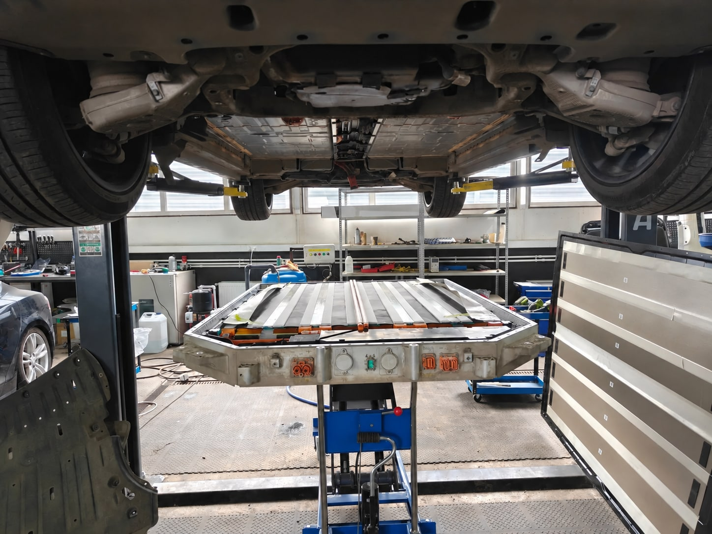
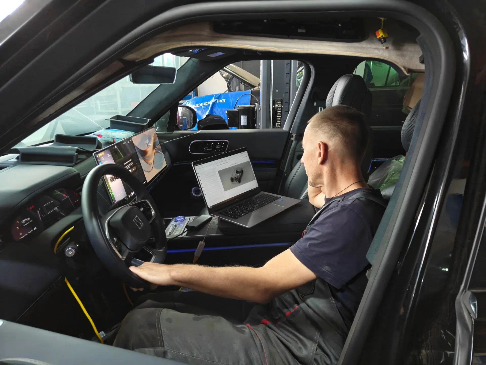
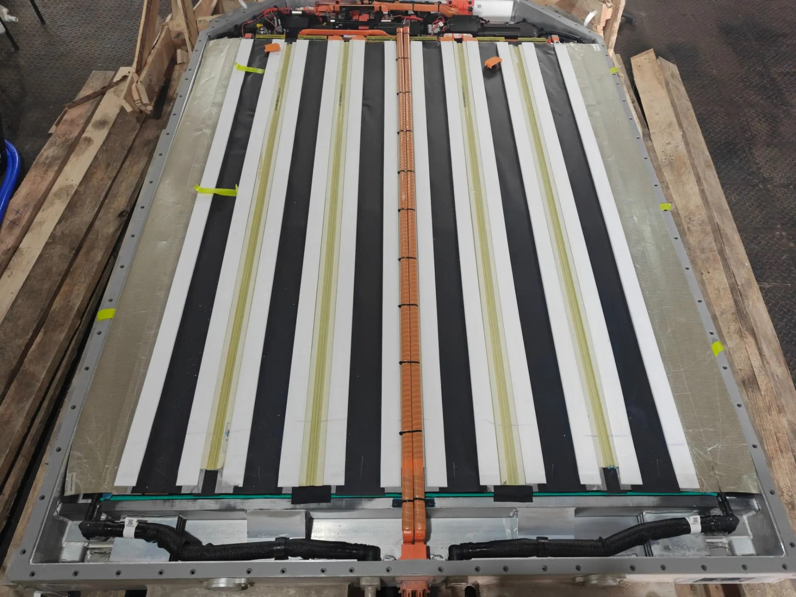

Русификация и обновление ПО
Русификация мультимедиа, настройка функций, кодирование и восстановление после неудачной прошивки. Возможность работ уточняем по модели и текущей версии ПО.
Уточнить версию ПО ↗Zeekr не едет или выдаёт ошибку ВВБ? Диагностируем и ремонтируем батареи и силовую электронику.
Диагностика и ремонт Zeekr в Москве. Ремонт высоковольтных батарей.
Zeekr 001 и другие модели
Принимаем машину или батарею отдельно.
Более 100 отремонтированных ВВБ Zeekr 001 · Гарантия 20 000 км
Варшавское шоссе, 21-й км, 3Б/3Ежедневно, 09:00–20:00

ВЫСОКОВОЛЬТНЫЕ БАТАРЕИ · ZEEKR 001
Ремонтируем высоковольтную батарею Zeekr 001 при ошибке по сопротивлению изоляции после протечки антифриза — без замены батареи целиком.
Принимаем в ремонт автомобиль или батарею отдельно. Снятую батарею можно отправить к нам в сервис с транспортной компанией. Подскажем как.
Zeekr 001 — наша основная специализация. Ремонтируем высоковольтные батареи и других моделей Zeekr.

Наши видео
На телефоне листайте видео в сторону →
НАПРАВЛЕНИЯ РАБОТЫ
ВВБ, BMS, изоляция и охлаждение. В том числе после попадания антифриза. Ремонтируем батареи и других моделей Zeekr.
Подробнее 02DC/DC, зарядные модули, BMS и управляющие платы. Диагностика и компонентный ремонт.
Подробнее 03Ошибки батареи, изоляция, силовые соединения и обмен данными. Поиск причины с помощью ZDS и измерений.
Подробнее 04Фары, редукторы и электронные блоки. Конфигурирование, программная привязка и адаптация.
Подробнее 05Обновление, настройка функций и восстановление после прошивки.
Подробнее 06Производим техническое обслуживание всех моделей Zeekr.
ПодробнееОбслуживаем по регламенту с учётом модели и пробега. Работы и стоимость согласуем заранее.
СТОИМОСТЬ
Состав работ и стоимость ремонта согласуем после проверки автомобиля.
Проверка ошибок и параметров электронных систем
от 1 990 ₽Проверка по симптомам и результатам первичной диагностики
После уточненияОбъём восстановления определяем по результатам проверки
По диагностикеЧтобы уточнить стоимость, сообщите модель автомобиля, симптомы и сообщения об ошибках.
ПОИСК НЕИСПРАВНОСТИ
Выберите симптом, чтобы узнать, с чего можно начать проверку. Это не дистанционный диагноз.
Начнём с диагностики ZDS, статусов блоков, высоковольтного контура и межблочной связи. Проверим условия, которые не позволяют автомобилю перейти в READY.
Обсудить симптом ↗Проверим ошибки BMS, изоляцию, высоковольтные соединения и контур охлаждения. Объём дальнейших работ определим после диагностики.
О ремонте ВВБ ↓Проверим питание, проводку, CAN-связь и конфигурацию заменённых блоков. Удар может затронуть несколько связанных систем.
О восстановлении ↓Уточним версию программного обеспечения, последовательность обновления и сообщения об ошибках. Затем определим возможный способ восстановления.
О программных работах ↓
ЭЛЕКТРОНИКА
Диагностируем платы, ищем повреждённые цепи и восстанавливаем электронные модули, когда это технически возможно и экономически оправданно.
СВЯЗАННЫЕ СИСТЕМЫ
Русификация мультимедиа, настройка функций, кодирование и восстановление после неудачной прошивки. Возможность работ уточняем по модели и текущей версии ПО.
Уточнить версию ПО ↗После установки фар, редукторов и электронных модулей выполняем конфигурирование и адаптацию. Проверяем штатные функции и связь с другими системами автомобиля.
Проверить совместимость ↗Проверяем не только коды ошибок, но и изоляцию, цепи питания, разъёмы, инверторы, охлаждение и обмен данными между блоками.
Обсудить диагностику ↗Диагностируем повреждённую проводку, электронные блоки и высоковольтный контур. Проверяем питание, CAN-линии, блокировки и конфигурацию заменённых узлов.
Разобрать ваш случай ↗НАШИ РАБОТЫ
Ремонт высоковольтных батарей, систем охлаждения, электроники и программная привязка компонентов.

ZEEKR 001 · ВЫСОКОВОЛЬТНАЯ БАТАРЕЯ
Проблема
Ошибка по сопротивлению изоляции высоковольтной батареи после протечки антифриза.
Решение
Восстанавливаем батарею без замены в сборе. Работы включают поиск неисправных модулей и ячеек, диагностику BMS, восстановление соединений и балансировку после ремонта.
Наш опыт
Отремонтировали более 100 ВВБ Zeekr 001. Ни одного гарантийного обращения по выполненным ремонтам. Гарантия на ремонт — 20 000 км.
Подробнее о ремонте ВВБ ↓ZEEKR 001
Выполненные работы
ZEEKR 9X
Выполненные работы
ZEEKR 9X
Выполненные работы
О СЕРВИСЕ
Zeekr Expert — специализированное направление Ультра Сервис Авто. Ремонтируем высоковольтные батареи и силовую электронику Zeekr. Используем ZDS и собственную лабораторию компонентного ремонта.
Листайте фотографии →

